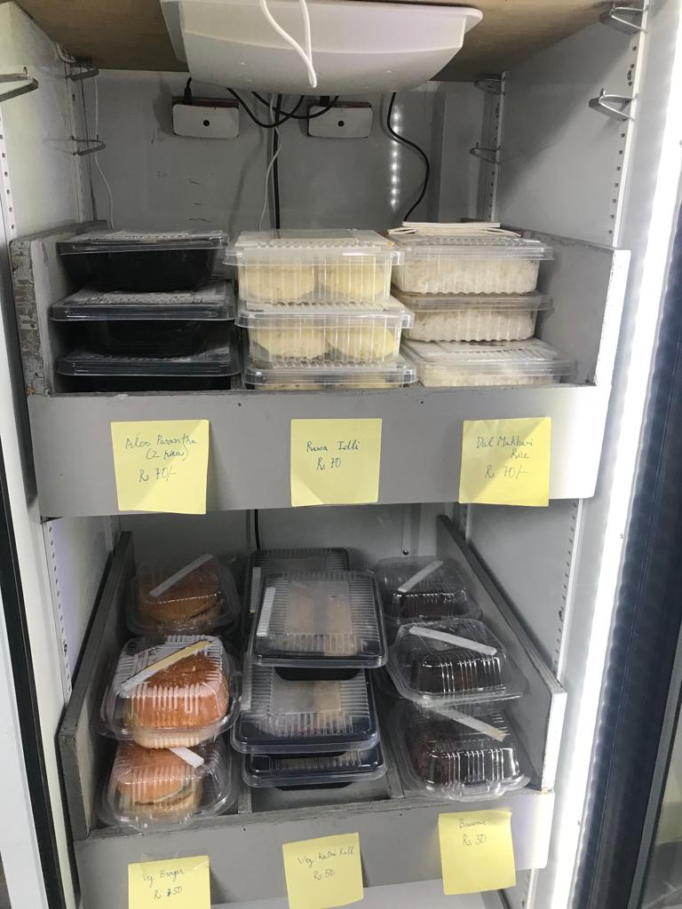

Autovend
Autovend is an automatic vending machine which aims to improve the customer experience while purchasing food items. To purchase a food item, a user just has to press a button in an app to unlock the fridge, he/she can just walk away with the food, and will be billed automatically.
Autovend has a two fold system to detect the objects being taken out. The first system is to detect the radio-frequency (RF) tags that are put on each food item. The second system is to detect which object is taken out using realtime object detection using two cameras. The result from the two system is combined to finally detect the food items that are taken out and the user is billed automatically.
Autovend has been deployed in front of the hostel at our university where about 20 food items are sold every day.